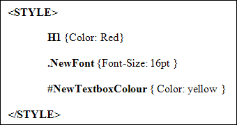
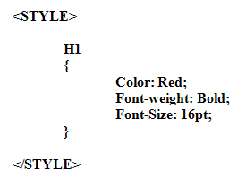

Cascading Style Sheet Rules
We've produced a video to go with this lesson. It's recommended that you read the text below as well, though. The video is here:
A Cascading Stylesheet rule tells the browser what the HTML looks like, and what it should do. A rule can dictate what just one HTML tag should look like, or you can construct your own rule to be applied as and where you want it.
For example, a rule can be set up that tells the browser to format every <P> tag so that its first line is indented. Or you could construct your own paragraph rule, and just apply the style to certain paragraphs, not all paragraphs.
There are three parts to a Rule: The Selector, the Property, and the Value.
The Selector
There are three different kinds of CSS Selector: An HTML selector, a Class selector, and an ID selector.
An HTML Selector is the text part of an HTML tag. The complete paragraph tag is <P>. So its Selector is just P – in other words, strip the angle brackets off and you get the HTML Selector.
A Class Selector is one you set up yourself, to be used anywhere on your page. The Font1 from our STYLE example above was a Class Selector. We picked the name ourselves and then applied the style to some text on the page.
An ID Selector is similar to a Class selector, but you use them to identify a particular element, a text box element on a form, for example.
Here’s an example of what all three selectors look in a STYLE tag.

The first one, H1, is the HTML Selector. Notice that it has had its angle brackets removed. With an HTML selector, all the HTML tags on the page will be formatted in the style you have set. So for H1 above, all the text between the <H1></H1> tags on the page will now be in Red.
The second one, .NewFont, is the Class selector. Note that a class selector must start with a full stop (period). Then you type the name for your selector (anything you want). No space is added between the full stop and the name of your selector.
The third one, #NewTextboxColour, is the ID selector. An ID selector starts with the hash/pound (#) symbol. You then type the name you want to use for your ID selector. Again, no space is added between the symbol and the name of your selector.
Property and Value
Once you have set up your Selector, you then define the Properties and Values for that selector.
The Property for the selector is the thing you’re trying to change. Examples are: Font, Color, Background, Margin, Text.
The Value for the selector is the new setting for the property. For example, for our COLOR property, we can set it to a value of an actual colour (red, blue, yellow), or a colour code (#FFFF00, #000000).
The property and the value are enclosed in curly brackets { }. The syntax for the whole thing would then be:
Selector {Property: Value}
An example is:
H1 {Color: Red}
H1 is the selector, Color is the property, and Red is the value of the property. Note the colon ( : ) after the Property. This is used to separate a Property from a Value, so that the browser knows which one is which.
If you want to add more than one property and value, there are two way to do it: all on one line, with each pair of properties and values separated by a semi-colon ( ; ). Or you can put each pair of properties and values on multiple lines separated by a semi-colon ( ; ). Like this:
H1 {Color: Red; Font-weight: Bold; Font-Size: 16pt;}
The multiple lines version is this:

The multiple lines version is easier to read.
So, to sum up:
- A CSS rule has three parts, a Selector, a Property, and a Value
- The Selector can be a HTML selector, a Class selector, or an ID selector
- You separate the Property and Value from the Selector by enclosing them in curly brackets, a left curly bracket first { and a right curly bracket to close the rule }
- A Property is separated from a Value by a colon ( : )
- If you’re using more than one pair of properties and values for the same selector, separate them with semi-colons ( ; )
In the next lesson, you'll see where to put your styles.